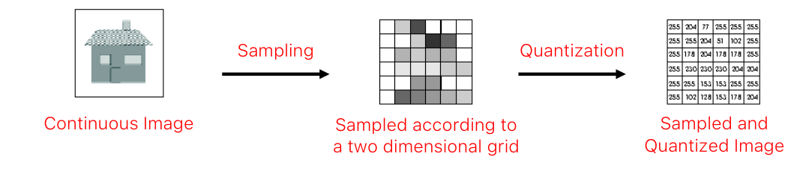
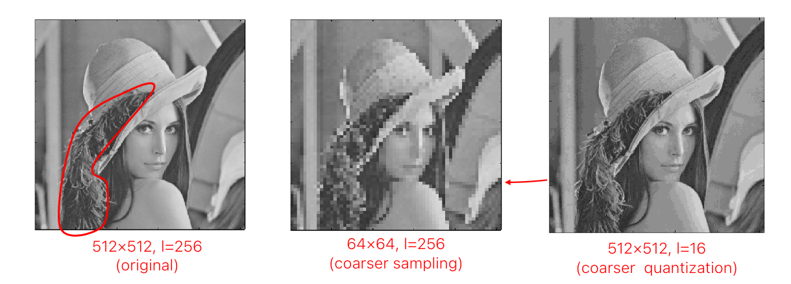
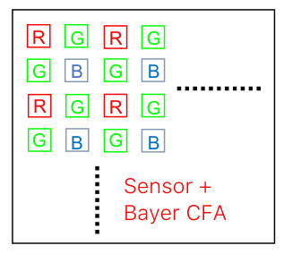

Image Digitalization
After the analogical/geometrical part of the image capture process, a digitalization procedure is needed. Normally, the image plane of a camera consist of a polar sensor which convert the irradiance in electricity. For this reason, we get a continuous value for each point of the image that we need to discretize and then convert to numeric. The whole process looks like this: 
Sampling
The planar continuous image is sampled along both the horizontal and vertical directions to pick up a 2D array (matrix) of N×M samples known as pixels:
Quantization
The continuos range is quantized in discrete levels (gray-scale). m is the number of bits used to represent a pixel.
Example
 In the second image we used less pixel than needed, in the one we used fewer bits than needed.
Camera sensor
It's a 2d array of photodetectors that convert light into a proportional charge. There are two main type of sensor:
- CCD (Charge Coupled Devices): More precise, less prone to nose and with a higher Dynamic range and better uniformity.
- CMOS (Complementary Metal Oxide Semiconductor): cheaper and smaller.
Color
The camera sensor cannot perceive color. In order to obtain it we need to put a filter on top of the lens that convert a pixel in red, green and blue. The number of green pixel are doubles the others to mimic the human eye. Through this process, the resolution gets lover due to the interpolation of pixel to obtain color. 
Dynamic range
Measures the range on which the sensor can operate. The DR of a sensor is defined as: The higher, the better. HDR (high dynamic range) is obtained by capturing 3 photos: overexposed, normal and underexposed. The 3 combined get the most possible amount of information.